|
paip-ru
1
|
Неверно думать о работе Вальса только как об изложении эпистемологии штриховых рисунков многогранников.
Вместо этого я думаю, что это элегантный пример парадигмы, которую мы можем ожидать увидеть снова и снова.
-Patrick Winston
The Psychology of Computer Vision (1975)
Эта книга касается только тех областей ИИ, которые имеют дело с абстрактными рассуждениями. Есть и другая сторона искусственного интеллекта, область робототехники, которая связана с взаимодействием абстрактных рассуждений с реальным миром с помощью датчиков и двигателей. Робот получает входные данные от камер, микрофонов, сонара и сенсорных устройств и производит "выходной сигнал", перемещая свои придатки или генерируя звуки. Реальный мир - более беспорядочное место, чем абстрактные миры, которые мы рассматривали. Робот должен иметь дело с зашумленными данными, неисправными компонентами и другими агентами и событиями в мире, которые могут повлиять на изменения в окружающей среде.
Компьютерное зрение - это подраздел робототехники, который занимается интерпретацией визуальной информации. Низкоуровневое зрение принимает данные непосредственно с камеры и обнаруживает линии, области и текстуры. Мы не будем этим заниматься. Высокоуровневое зрение использует результаты низкоуровневого компонента для построения трехмерной модели объектов, изображенных на сцене. В этой главе рассматривается один небольшой аспект видения(зрения) высокого уровня.
В этой главе мы рассмотрим проблему маркировки линейной диаграммы: имея список линий и вершин, в которых они пересекаются, как мы можем определить, что эти линии представляют? Например, даны девять линий на рис. 17.1, как мы можем интерпретировать диаграмму как куб?
| []() |
|---|
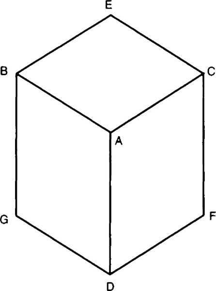
|
| Рисунок 17.1: Куб |
Прежде чем мы сможем пререйти к интерпретации, мы должны договориться о кандидатах. В конце концов, рисунок 17.1 может быть просто шестиугольником с тремя линиями посередине. Для целей этой главы мы будем рассматривать только диаграммы, которые изображают один или несколько многогранников-* трехмерных твердых фигур, поверхности которых являются плоскими гранями, ограниченными прямыми линиями. Кроме того, мы разрешаем только *трехгранные вершины. То есть каждая вершина должна быть образована пересечением трех граней, как в углу куба, где вершина, передняя часть и сторона куба сходятся. Третье ограничение на диаграммы - недопустимость так называемых "случайных" вершин. Например, рисунок 17.1 может быть изображением трех разных кубиков, висящих в пространстве, которые случайно выстраиваются так, что край одного выровнен с краем другого с нашей точки зрения. Предположим, что это не так.
Учитывая диаграмму, которая соответствует этим трем ограничениям, наша цель - идентифицировать каждую линию, помещая ее в один из трех классов:
Рисунок 17.2 показывает маркировку куба с использованием этих соглашений. Вершина A - это ближний угол куба, а три выходящие из нее прямые - выпуклые. Линии GD и DF - вогнутые линии, обозначающие стык между кубом и поверхностью, на которой он лежит. Остальные линии являются граничными линиями, указывающими на то, что между кубом и фоном нет физической связи, но есть другие стороны куба, которые нельзя увидеть.
| []() |
|---|
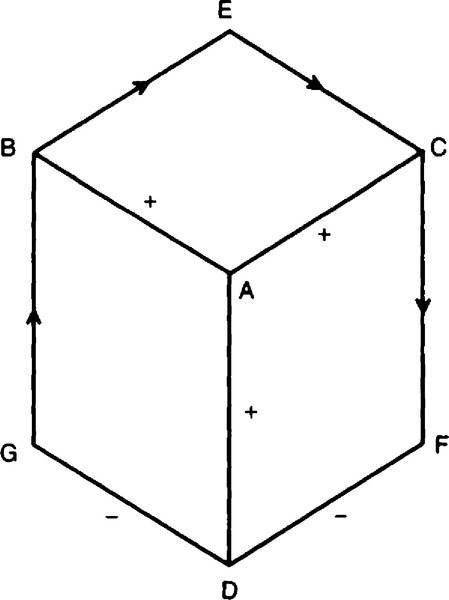
|
| Рисунок 17.2: Куб, помеченный линией |
Техника маркировки линий, разработанная в этой главе, основана на простой идее. Сначала мы перечисляем все возможные вершины и все возможные обозначения для каждой вершины. Оказывается, в мире трехгранных многоугольников всего четыре разных типа вершин. Мы называем их вершинами L, Y, W и T. из-за их формы. Вершины Y и W также называются вилками и стрелками соответственно. Вершины перечислены на рисунок 17.3. Каждая вершина накладывает некоторые ограничения на составляющие ее линии. Например, в вершине W средняя линия может быть помечена знаком + или -, но не стрелкой.
| []() |
|---|
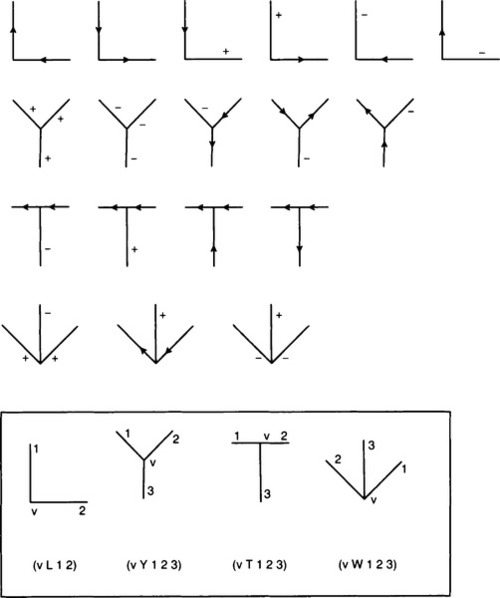
|
| Рисунок 17.3: Возможные вершины и метки |
Каждая линия соединяет две вершины, поэтому должна удовлетворять обоим ограничениям. Это предлагает простой алгоритм для разметки диаграммы, основанный на распространении ограничений: сначала пометьте каждую вершину всеми возможными метками для типа вершины. L вершина имеет шесть возможностей, Y - пять, T - четыре, а W - три. Затем выберите вершину V. Рассмотрим соседнюю вершину N (то есть N и V соединены линией). N также будет иметь набор возможных меток. Если N и V согласовывают возможные обозначения линии между ними, то мы ничего не выиграем. Но если пересечение двух множеств возможностей меньше, чем множество возможностей V, то мы нашли ограничение на диаграмме. Мы соответствующим образом корректируем возможные маркировки N и V. Каждый раз, когда мы добавляем ограничение в вершину, мы повторяем весь процесс для всех соседних вершин, чтобы дать ограничению возможность распространиться как можно дальше. Когда каждая вершина была посещена хотя бы один раз и больше нет ограничений для распространения, тогда мы закончили.
Рисунок 17.4 иллюстрирует этот процесс. Слева начинаем с куба. Все вершины имеют все возможные обозначения, за исключением того, что мы знаем, что линия GD вогнута (-), что означает, что куб покоится на поверхности. Это ограничивает вершину D таким образом, что прямая DA должна быть выпуклой (+). На среднем рисунке ограничение на вершину D распространилось на вершину A, а на правом рисунке оно распространяется на вершину B. Скоро весь куб будет промаркирован уникальными метками.
| []() |
|---|
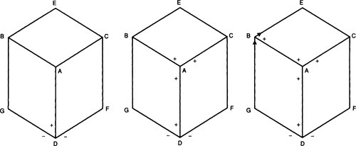
|
| Рисунок 17.4: Распространение ограничений |
Многие диаграммы будут иметь уникальные(однозначно расставленные) метки в процессе распространения ограничений. Однако некоторые диаграммы неоднозначны. У них все еще будет несколько меток после завершения распространения ограничения. В этом случае мы можем искать решение. Просто выберите неоднозначную вершину, выберите одну из возможных меток для этой вершины и повторите процесс распространения/поиска ограничения. Продолжайте, пока диаграмма не станет однозначной или противоречивой.
На этом набросок алгоритма маркировки линий завершен. Теперь мы готовы к реализации программы маркировки. Её глоссарий находится на рис. 17.5.
| []() |
|---|
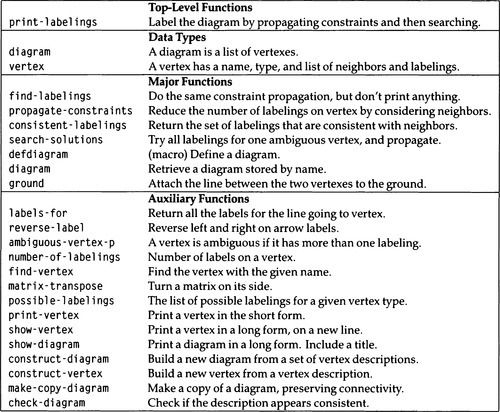
|
| Рисунок 17.5: Глоссарий программы маркировки линий |
*(ed: should be a markdown table)*
Две основные структуры данных - это диаграмма(diagram) и вершина(vertex). Можно было бы реализовать тип данных для lines(линий), но это не обязательно: линии неявно определяются двумя вершинами в их конечных точках.
Диаграмма полностью определяется списком вершин, поэтому для структы diagram(диаграммы) нужен только один слот. vertex(Вершина) же - более сложная структура. Каждая вершина имеет идентифицирующее имя(name) (обычно из одной буквы), тип вершины(type) (L, Y, W или T), список соседних вершин(neighboring) и список возможных меток/марок(possible labelings). Маркировка(labeling) - это список меток линии. Например, вершина Y изначально будет иметь список из пяти возможных меток. Если обнаруживается, что вершина является внутренней частью вогнутого угла, то она будет иметь единственную маркировку (- - -). Мы даем информацию о типе в слотах вершины, потому что это сложный тип данных. Синтаксис defstruct таков, что вы не можете указать: тип(type) без предварительного указания значения по умолчанию. Мы выбрали L в качестве значения по умолчанию для слота типа случайным образом, но обратите внимание, что было бы ошибкой указать nil в качестве значения по умолчанию, потому что nil не относится к правильному типу.
Неоднозначная вершина будет иметь несколько маркировок, в то время как однозначная вершина имеет ровно одну, а вершина без маркировки указывает на невозможную диаграмму. Изначально мы не знаем, какие вершины какие, поэтому все они начинаются с нескольких возможных обозначений. Обратите внимание, что маркировка - это список, а не набор: порядок меток имеет значение и соответствует порядку соседних вершин. Функция possible-labelings дает список всех возможных маркировок для каждого типа вершины. Мы используем R и L вместо стрелок в качестве меток, потому что ориентация стрелок имеет значение. R означает, что когда вы путешествуете от вершины к ее соседу, многогранник находится справа, а фоновый объект - слева. Таким образом, R эквивалентно стрелке, указывающей от вершины. Буква L как раз наоборот.
Основная функция print-labelings принимает диаграмму в качестве входных данных, уменьшает количество меток на каждой вершине путем распространения ограничений, а затем выполняет поиск всех согласованных интерпретаций. Вывод печатается до и после каждого шага.
Функция propagate-constraints(распространять-ограничения) берет вершину и рассматривает ограничения, налагаемые соседними вершинами, чтобы получить список всех propagate-constraints(согласованных маркировок) для вершины. Если количество согласованных маркировок меньше, чем количество до того, как мы начали, тогда ограничения соседей повлияли на эту вершину, поэтому мы распространяем вновь найденные ограничения на эту вершину обратно каждому соседу. Функция возвращает nil и, таким образом, немедленно останавливает распространение, если есть невозможная вершина. В противном случае распространение продолжается до тех пор, пока не останется никаких изменений в маркировке.
Весь алгоритм распространения запускается вызовом every in print-labelings, который распространяет ограничения из каждой вершины диаграммы. Но не очевидно, что это все, что требуется. Разве после однократного распространения из каждой вершины не может быть другой вершины, которую нужно изменить? Единственная вершина, которая может нуждаться в перемаркировке, - это та, у которой был изменен сосед с момента ее последнего обновления. Но любую такую вершину посетило бы propagate-constraint (распространение ограничения), поскольку мы распространяемся на всех соседей. Таким образом, за один проход по вершинам в сочетании с рекурсивными вызовами будут найдены и применены все возможные ограничения.
Следующий вопрос, который стоит задать, - гарантировано ли завершение работы алгоритма. Ясно, что это так, потому что propagate-constraints(распространение ограничения) может производить рекурсивные вызовы только тогда, когда удаляет метку. Но так как изначально существует конечное число разметок (не более шести на вершину), должно быть конечное количество вызовов для propagate-constraints.
Вершина передается функции consistent-labelings(согласовать метки). Она получает все метки для этой вершины от соседних вершин, собирая их в neighbor-labels(метки соседей). Затем она проверяет все метки на текущей вершине, оставляя только те, которые согласуются со всеми ограничениями соседей. Вспомогательная функция labels-for находит метки для конкретного соседа у вершины, и reverse-label учитывает тот факт, что метки L и R интерпретируются относительно вершины, на которую они указывают.
Распространения ограничений часто бывает достаточно, чтобы получить уникальную интерпретацию. Но иногда диаграмма все же недостаточно ограничена, и нам придется выполнить поиск для решения. Функция search-solutions сначала проверяет, является ли диаграмма неоднозначной, проверяя, есть ли у нее неоднозначная вершина v. Если диаграмма недвусмысленна(т.е однозначна), то это решение, и мы его возвращаем (в виде списка, поскольку since search-solutions предназначен для возврата списка всех решений). В противном случае для каждой из возможных меток для неоднозначной вершины мы создаем новую копию диаграммы и устанавливаем метку вершины v в копии в одну из возможных меток. Фактически, мы предполагаем, что маркировка правильная. Мы вызываем propagate-constraints; если она возвращает сбой(fails), значит, мы ошиблись, поэтому нет никаких решений с такой маркировкой(метка установлена не правильно). Но если она возвращает успех, мы рекурсивно вызываем search-solutions, чтобы получить список решений, сгенерированных с этой меткой.
Вот и все, что касается алгоритма; остались лишь вспомогательные функции. Вот три из них:
Вот функции печати. print-vertex печатает вершину в краткой форме. Она подчиняется соглашению print о возврате первого аргумента. Функции show-vertex и show-diagram печатают более подробные формы. Они подчиняются соглашению о функциях, подобных describe, т.е. о том, что они вообще не возвращают никаких значений.
Обратите внимание, что matrix-transpose вызывается show-vertex, чтобы перевернуть матрицу меток на свою сторону. Это работает так:
Реализация matrix-transpose на удивление лаконична. Это старый Lisp-трюк, и его стоит понять:
Оставшийся код связан с созданием диаграмм. Нам нужен удобный способ задания диаграмм. Один из способов - программа распознавания линий, работающая на оцифрованном вводе с камеры или растрового изображения. Другая возможность - интерактивная программа рисования, использующая мышь и отображение растрового изображения. Но поскольку пока нет стандарта Common Lisp для взаимодействия с такими устройствами, нам придется довольствоваться текстовым описанием. Макрос defdiagram определяет диаграмму и дает ей имя. За именем следует список описаний вершин. Каждое описание представляет собой список, состоящий из имени вершины, типа вершины (Y, A, L или T) и имен соседних вершин. Вот снова описание defdiagram для куба, показанного на рис. 17.6.
| []() |
|---|
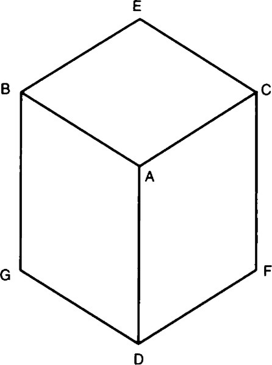
|
| Рисунок 17.6: Куб |
Макрос defdiagram вызывает construct-diagram для выполнения реальной работы. Было бы возможно преобразовать defdiagram в defvar, сделав имена специальными переменными. Но тогда ответственность за создание копий такой переменной перед ее передачей деструктивной функции будет лежать на пользователе. Вместо этого я использую put-diagram и diagram для размещения и получения диаграмм в таблице, diagram извлекает названную диаграмму и делает ее копию. Таким образом, пользователь не может повредить исходные диаграммы, хранящиеся в таблице. Другой возможностью было бы расширение defdiagram в определение функции для name, возвращающей копию диаграммы. Я решил хранить пространство имен диаграммы отдельно от пространства имен функций, поскольку имена вроде cube имеют смысл в обоих пространствах.
Функция construct-diagram переводит описание каждой вершины, используя construct-vertex, а затем заполняет соседей каждой вершины.
defstruct для diagram автоматически создает функцию copy-diagram, но она просто копирует каждое поле, не копируя содержимое каждого поля. Таким образом, нам нужно make-copy-diagram для создания копии, не имеющей общей структуры с оригиналом.
Теперь мы готовы попробовать маркировку диаграмм. Сначала куб:
For 29,160 interpretations.
For 216 interpretations.
Четыре интерпретации соответствуют, соответственно, случаям, когда куб свободно плавает, прикреплен к полу (GD и DF = -), прикреплен к стене справа (EC и CF = -) или прикреплен к стене на слева (BG и BE = -). Они показаны на рисунок 17.7. Было бы неплохо, если бы мы могли предоставить информацию о том, где прикреплен куб, и посмотреть, сможем ли мы получить уникальную интерпретацию. Функция ground(земля) принимает диаграмму и модифицирует ее, делая одну или несколько линий линиями примыкающими к земле - линиями, имеющими вогнутую (-) метку, соответствующую месту соединения с землей.
| []() |
|---|
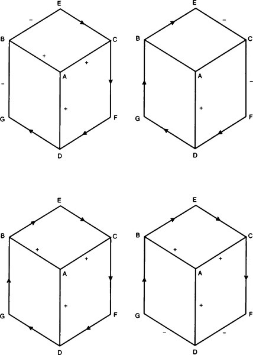
|
| Рисунок 17.7: Четыре интерпретации куба |
Мы можем увидеть, как это работает на кубе:
For 4,860 interpretations.
Обратите внимание, что пользователю нужно было указать только одну из двух линий примыкающих к земле, GD. Программа обнаружила, что DF тоже заземлен. Точно так же при программировании ground-line(наземной линии) нам нужно было обновить только одну из вершин. Остальное делается путем распространения ограничений.
Следующий пример дает те же четыре интерпретации в том же порядке (свободно плавающий, прикрепленный снизу, прикрепленный справа и прикрепленный слева) при интерпретации без земли. Заземленная версия дает уникальное решение, показанное в следующих выходных данных и на рис. 17.9.
| []() |
|---|
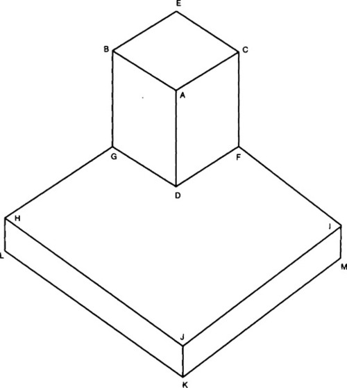
|
| Рисунок 17.8: Куб на тарелке |
| []() |
|---|
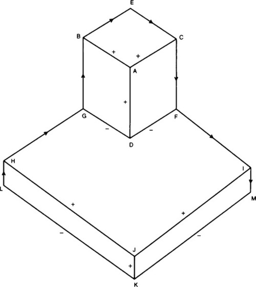
|
| Рисунок 17.9: Промаркированный куб на тарелке |
For 32.805.000 interpretations.
Интересно опробовать алгоритм на "невозможной" диаграмме. Оказывается, алгоритм не находит никакой интерпретации этой хорошо известной иллюзии:
For 544,195.584 interpretations.
For 2,073,600 interpretations.
There are zero solutions:
Теперь попробуем более сложную диаграмму(схему):
T/3 W: TW=[L-+] TX=[R-+] TZ=[++-]
После распространения ограничения диаграмма выглядит так:
Мы видим, что алгоритм смог прийти к единственной интерпретации. Более того, даже несмотря на то, что было большое количество возможностей - более квадриллиона, - вычисления выполняются довольно быстро. Большая часть времени уходит на печать, поэтому для получения точных результатов мы определяем функцию для поиска решений, ничего не печатая:
Когда мы измеряем время применения find-labelings к расположенной на земле башне и poiuyt, мы обнаруживаем, что расчет башни занимает 0,11 секунды, а poiuyt 21 секунду. Это более чем в 180 раз дольше, даже несмотря на то, что у poiuyt вдвое меньше вершин и всего около полумиллиона интерпретаций по сравнению с квадриллионом башни. Обработка poiuyt занимает много времени из-за небольшого количества локальных ограничений, поэтому нарушения обнаруживаются только при одновременном рассмотрении нескольких широко разделенных частей фигуры. Интересно, что тот же факт, из-за которого обработка poiuyt занимает больше времени, также ответственен за его восприятие как иллюзию.
В этом разделе рассматривается еще один пример и рассматривается, что делать, если во входных данных есть очевидные ошибки. Пример взят из книги Чарняка и Макдермотта Introduction to Artificial Intelligence(Введение в искусственный интеллект), стр. 138, и показан на рис. 17.12.
| []() |
|---|
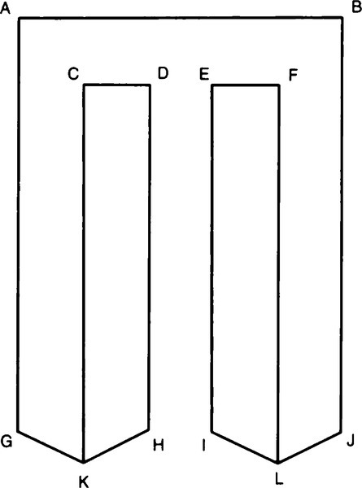
|
| Рисунок 17.10: Невозможная фигура (Poiuyt) |
| []() |
|---|
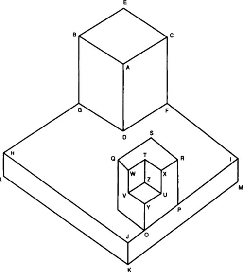
|
| Рисунок 17.11: Башня |
| []() |
|---|
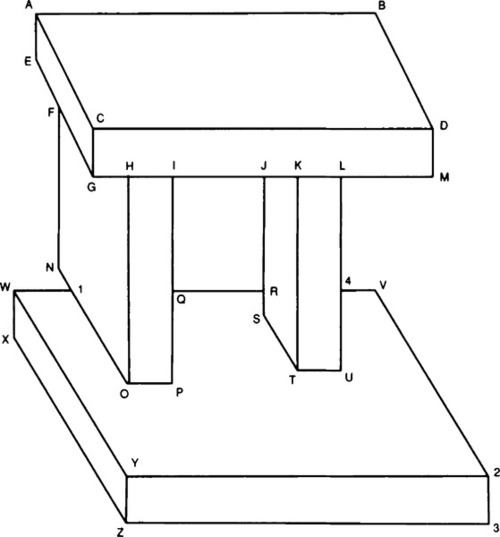
|
| Рисунок 17.12: Диаграмма(Схема) арки |
К сожалению, выполнение этого примера не дает согласованных интерпретаций после распространения ограничения. Это кажется неправильным. Хуже того, когда мы пытаемся заземлить(приложить к земле) диаграмму по линии XZ и вызывать для неё print-labelings, мы получаем следующую ошибку:
The function expected a fixnum >= zero.
While in the function LABELS-FOR<= CONSISTENT-LABELINGS
LABELS-FOR (P.C. = 23)
Что пошло не так? Хорошее предположение - что диаграмма непоследовательна - где-то была допущена ошибка при расшифровке диаграммы. Может быть, диаграмма на самом деле невозможна, как и poiuyt. Но это маловероятно, поскольку нам легко дать интуитивную интерпретацию. Нам нужно отладить диаграмму, и было бы неплохо обработать ошибку более изящно.
Одно свойство диаграммы, которое легко проверить, - это то, что каждая линия должна упоминаться дважды. Если между вершинами A и B есть линия, в дескрипторах вершин должно быть две записи следующего вида:
Здесь символ "?" означает, что нас не беспокоит тип вершин, только наличие линии в двух местах. Следующий код выполняет эту проверку при определении диаграммы. Он также проверяет, что каждая вершина относится к одному из четырех допустимых типов и имеет правильное количество соседей.
"Define a diagram.
A copy can be gotten by (diagram name)."
Теперь попробуем еще раз арку:
>>ERROR: Inconsistent diagram. 6 total errors.
defdiagram выполнял расшифровку из промаркированной вручную диаграммы, и похоже, что эта транскрипция стала жертвой одной из старейших проблем математической записи: путать "u" с "v". Другая проблема заключалась в том, чтобы рассматривать линию U-L как единую линию, когда на самом деле она разбита на два сегмента, U-4 и 4-L. Исправление этих ошибок дает диаграмму:
На этот раз check-diagram ошибок не обнаружила, но запуск print-labelings еще раз не дает решения. Чтобы получить больше информации о том, какие ограничения применяются, я изменил progate-constraints, чтобы распечатать некоторую информацию:
Повторный запуск проблемы дает следующую трассу:
На диаграмме после распространения ограничений мы видим, что вершины A, B, C, D, G и H не имеют интерпретаций, поэтому они являются хорошим местом для поиска ошибки в первую очередь. Из трассы(распечатанного следа), генерируемого propagate-constraints(распространением ограничений (линии, начинающиеся с точки с запятой), мы видим, что распространение ограничений началось в точке P и после семи распространений достигло некоторых подозрительных вершин:
A и B выглядят приемлемо, но посмотрите на запись для вершины D. Она показывает три интерпретации и показывает, что соседями являются C, B и M. Обратите внимание, что линия DC, первая запись в каждой из интерпретаций, должна быть либо -, либо R. Но это ошибка, потому что "правильная" интерпретация имеет DC как линию +. При более внимательном рассмотрении мы замечаем, что D на самом деле является вершиной W-типа, а не вершиной Y, как написано в определении. Мы должны иметь:
Запустив задачу еще раз и проверив вывод трассировки, мы вскоре обнаружим настоящий корень проблемы: наиболее естественная интерпретация диаграммы выходит за рамки программы! Есть много интерпретаций, в которых блоки летают в воздухе, но если мы заземлим линии OP, TU и XZ, мы столкнемся с проблемами. Помните, мы говорили, что рассматриваем только трехгранные вершины. Но вершина 1 будет четырехгранной вершиной, образованной пересечением четырех плоскостей: верхней и задней части основания, а также нижней и левой стороны левой колонны. Интуитивно правильная маркировка для диаграммы будет иметь O1 вогнутой (-) линией, а Al - закрывающей линией, но наш репертуар разметки для T вершин не позволяет этого. Следовательно, диаграмма не может быть корректно промаркирована.
Вернемся назад и рассмотрим ошибку, появившуюся в первой версии диаграммы. Несмотря на то, что ошибка больше не появляется на этой диаграмме, мы хотим убедиться, что она не появится в другом случае. Вот ошибка:
Функция ожидала fixnum >= zero.
Находясь в функции LABELS-FOR <= CONSISTENT-LABELINGS
LABELS-FOR (P.C. = 23)
Глядя на определение labels-for, мы видим, что он ищет исходную вершину, которая в данном случае равна 4, среди соседей U. Она не была найдена, поэтому pos стал nil, а функция nth пожаловалась, что ей не было дано целое число в качестве аргумента. Таким образом, эта ошибка, если бы мы преследовали ее раньше, указала бы на то, что 4 не был указан как сосед U, хотя должен был быть. Конечно, мы выяснили это другими способами. В любом случае, здесь нет ошибки, которую нужно исправить - до тех пор, пока диаграмма будет непротиворечивой, ошибка label-for больше не появится.
В этом разделе выделены два момента. Во-первых, пишите код, который проверяет ввод как можно тщательнее. Во-вторых, даже когда проверка ввода выполнена, пользователю по-прежнему остается понять ограничения программы.
Guzman (1968) was one of the first to consider the problem of interpreting line diagrams. He classified vertexes, and defined some heuristics for combining information from adjacent vertexes. Huffman (1971) and Clowes (1971) independently came up with more formai and complete analyses, and David Waltz (1975) extended the analysis to handle shadows, and introduced the constraint propagation algorithm to eut down on the need for search. The algorithm is sometimes called "Waltz filtering" in his honor. With shadows and nontrihedral angles, there are thousands of vertex labelings instead of 18, but there are also more constraints, so the constraint propagation actually does better than it does in our limited world. Waltz's approach and the Huf f man-Clowes labels are covered in most introductory AI books, including Rich and Knight 1990, Charniak and McDermott 1985, and Winston 1984. Waltz's original paper appears in The Psychology of Computer Vision (Winston 1975), an influential volume collecting early work done at MIT. He also contributed a summary article on Waltz filtering (Waltz 1990).
Many introductory AI texts give vision short coverage, but Charniak and McDermott (1985) and Tanimoto (1990) provide good overviews of the field. Zucker (1990) provides an overview of low-level vision.
Ramsey and Barrett (1987) give an implementation of a line-recognition program. It would make a good project to connect their program to the one presented in this chapter, and thereby go all the way from pixels to 3-D descriptions.
This chapter has solved the problem of line-labeling for polyhedra made of trihedral vertexes. The following exercises extend this solution.
Exercise 17.1 [h] Use the line-labeling to produce a face labeling. Write a function that takes a labeled diagram as input and produces a list of the faces (planes) that comprise the diagram.
Exercise 17.2 [h] Use the face labeling to produce a polyhedron labeling. Write a function that takes a list of faces and a diagram and produces a list of polyhedra (blocks) that comprise the diagram.
Exercise 17.3 [d] Extend the system to include quad-hedral vertexes and/or shadows. There is no conceptual difficulty in this, but it is a very demanding task to find all the possible vertex types and labelings for them. Consult Waltz 1975.
Exercise 17.4 [d] Implement a program to recognize lines from pixels.
Exercise 17.5 [d] If you have access to a workstation with a graphical interface, implement a program to allow a user to draw diagrams with a mouse. Have the program generate output in the form expected by construct-diagram
1.8.13